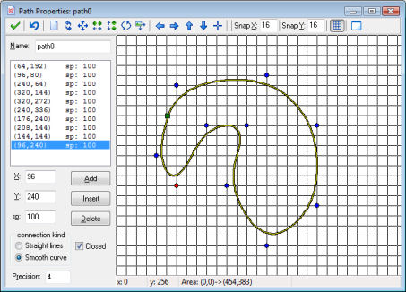

At the top left of the form you can set the name of the path, as usual. Below it you find the points that define the path. Each point has both a position and a speed (indicated with sp). Depending on how you use the path, the position is either absolute, that is, the instance for which you will later use the path will follow it at that particular place, or it is relative, that is, the instance will always start at the first position on the path and follow the path from there. The speed should be interpreted as follows. A value of 100 means the original speed given for the path when assigning it to the instance. A lower value reduces the speed, a higher value increases it (so it indicates the percentage of the actual speed). Speed will be interpolated between points, so the speed changes gradually.
To add a point press the button Add. A copy is made of the currently selected point. Now you can change the actual position and speed by changing the values in the edit boxes. Whenever you select a point in the list, you can also change its values. Press Insert to insert a new point before the current one, and Delete to delete the current point.
At the right of the form you will see the actual path. The red dot indicates the currently selected control point. The blue dots are the other control points. The green square indicates the position where the path starts. You can also change the path using the mouse. Click anywhere on the image to add a point. Click on an existing point and drag it to change its position. When you hold <Shift> while clicking on a point, you insert a point. Finally, you can use the right mouse button to remove points. (Note that you cannot change the speed this way.) Normally the points will be aligned with a grid. You can change the grid settings at the top tool bar. Here you can also indicate whether the grid should be visible or not. If you want to precisely position a point, hold the <Alt> key while adding or moving it.
You can influence the shape of the path in two ways. Fist of all you can use the type of connection. You can either choose straight line connections or a smooth path. Secondly, you can indicate whether the path must be closed or not.
On the toolbar there are a number of important controls. From left to right they have the following meaning. The first button indicates that you are ready and want to close the form, keeping the changes. (If you want to discard the changes, press the cross to close the window and indicate that you do not want to save the changes.) Next there is the button to undo the last change.
The following set of toolbar buttons allows you the clear the path, reverse the order in which the path is traversed, shift the path, mirror it horizontally, flip it vertically, rotate it, and scale it. Next there are buttons to shift the view (not the path itself; the actual view area is indicated in the status bar at the bottom) and to center the view. You can also use the middle mouse button to PAN around the view around
As already indicated above you can next set the snap values and whether to show the grid. Finally there is a button to indicate that you want to see a particular room as background for the path. Using this you can easily put the path at a particular place in the room, for example on a race track, so that later the instances will follow the correct route. (This only makes sense when you use absolute paths; see below.)
You must indicate the path that must be followed and the speed in pixels per step. When the speed is positive the instance starts at the beginning of the path. If it is negative it starts at the end. Remember that when you defined the path you specify the actual speed relative to this indicated speed. There is also an action to change the speed with which the path is executed. You could, for example, use this to let an instance slow down or speed up along its path. Note that the normal speed of the instance is ignored (actually set to 0) when executing a path. Also things like gravity and friction do not influence the motion along a path.
Next you specify the end behavior, that is, what should happen when the end of the path is reached. You can choose to stop the motion and end the path. You can also restart the path from the beginning, that is, the instance jumps back to the position where the path was started and executes the path again. A third option is to restart from the current position, that is, the instance follows the path again but now with this new starting position (this is the same when the path is closed). Finally you can choose to reverse the motion, making the instance go back and forth along the path. Note that also at the end of the path an event happens; see below.
Finally you can indicate whether the path must be absolute or relative. An absolute path is executed at the place where it is defined. The instance is placed at the start position and moved from there (end position when speed is negative). This is, for example, useful when you have a race track on which you have defined the path. When you choose relative the instances starts executing the path from its current position. This is useful when an instance should make a local motion. For example, space ships in a space invader game can make a particular turn from their current position.
When you want to place the instance at a different point along its path you can use the action to set the path position. A path position always lies between 0 and 1, 0 indicating the start position and 1 the end position on the path. Note that in each step the direction variable is automatically set to the correct direction along the path. You can use this variable to choose the correct orientation for the sprite.
When using scripts or pieces of code you have more control over the way the path is executed. There is a function to start a path for an instance. The variable path_position indicates the current position on the path (between 0 and 1 as indicated above). The variable path_speed indicates the speed along the path. A variable path_scale can be used to scale the path. A value of 1 is the original size. A larger value indicates that the path is made larger; a smaller value makes it smaller. The variable path_orientation indicates the orientation in which the path is executed (in degrees counter-clockwise). This enables you to execute the path in a different orientation (e.g. moving up and down rather than left and right). There is also a variable to control the end behavior. Finally there are lots of functions to ask for properties of paths (e.g. the x and y coordinate at a certain positions) and there are functions to create paths. There are even functions that create collision free paths for an instance to reach a certain goal. See the later sections on GML for details on this.
You might wonder what happens when the instance collides with another instance while it follows a path. Basically the same happens as when the instance moves with a speed. When there is a solid instance, the instance is placed back at its previous location. When both instances are not solid they are placed at their new positions Next the collision event(s) are executed and it is checked whether the collision has been resolved. If not and the other instance is solid the instance will stop, as it should (assuming there is a collision event defined). Also, the path_position variable is not increased. When the blocking instance disappears the instance will continue to follow its path. To handle collisions yourself the variable path_positionprevious can be useful. It holds the previous position for the path and you can set the path position to this variable to avoid advancing along the path.
| Converted from CHM to HTML with chm2web Pro 2.85 (unicode) |